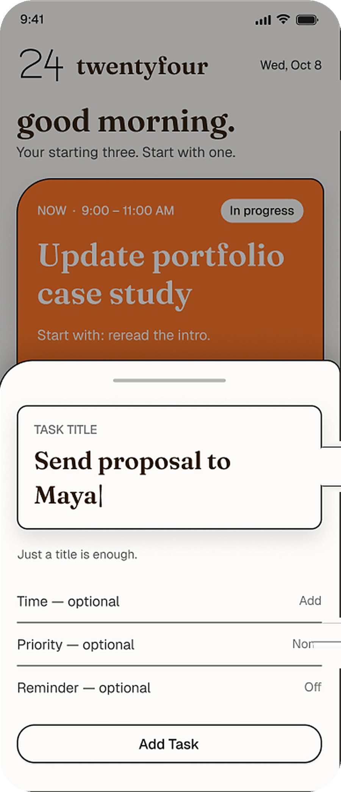
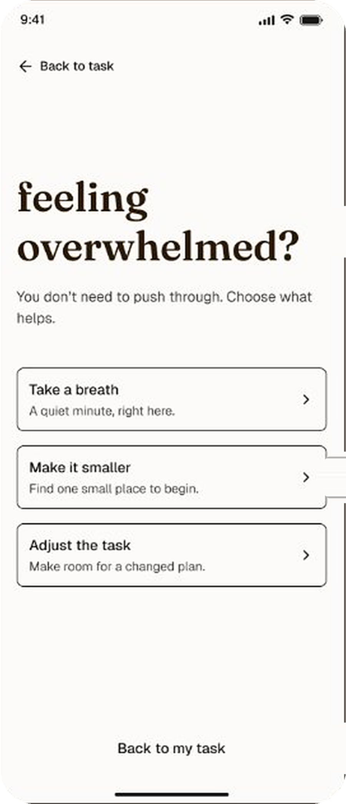
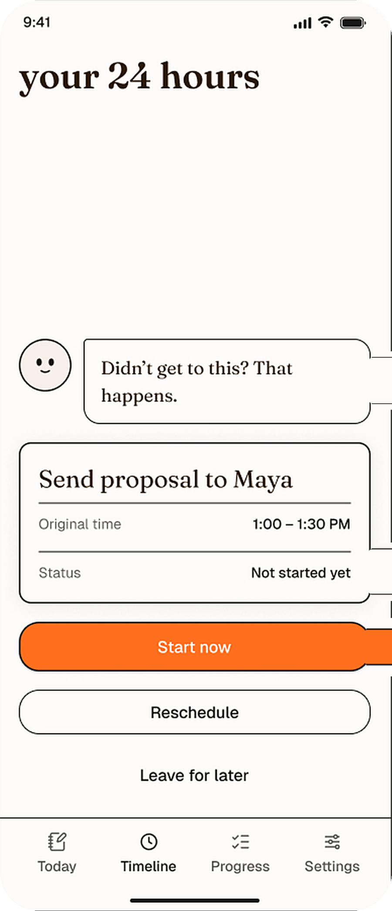
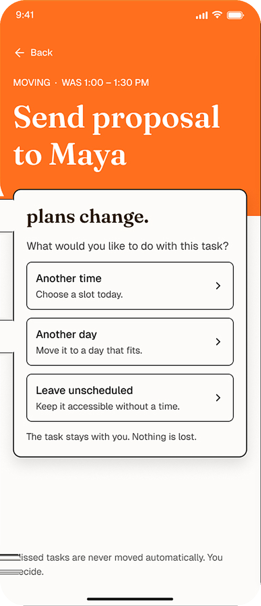
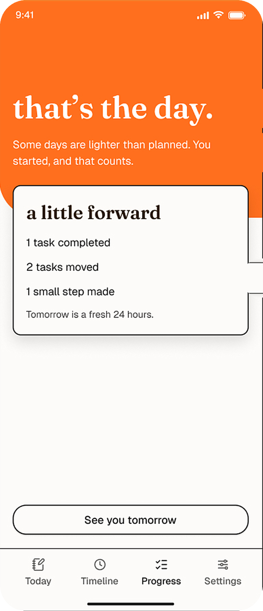

Overplanning
Too many tasks can become overwhelming.
Productivity that meets you where you are.
A calm productivity companion for freelancers and job seekers, designed to make starting easier and daily planning more flexible.
Rigid task lists can make unpredictable days feel overwhelming. My hypothesis: the hard part isn’t planning, it’s what happens when plans fall apart.
Too many tasks can become overwhelming.
Organising work can take too much effort.
Falling behind can make restarting harder.
9 survey responses and 5 informal interviews with freelancers and job seekers. Exploratory signals, not a representative sample.
The design challenge: how might TwentyFour help someone start small, and find their way back when the day changes? Three stages of the core flow, each traced from evidence to trade-off.




Alternatives make the reasoning visible; they’re options worth weighing, not a record of everything I prototyped.
| Feature | Decision | Reason | Evidence level |
|---|---|---|---|
| Quick task entry | Keep | Lowers the effort of capturing a task | Research-informed hypothesis |
| One small step at a time | Keep | Intended to lower the barrier to starting | Needs usability validation |
| Choices for missed tasks | Keep | A way back in without auto-moving work | Design rationale; focus of the next test |
| Flexible time slots | Keep | Respondents’ preferred focus times differed | Exploratory research finding |
| Fixed or circadian focus schedules | Avoid in v1 | Respondents’ preferred focus times differed | Exploratory research finding |
| Streaks and gamification | Defer | May add pressure that conflicts with a calm experience | Design rationale, not a user response |
| Water tracking | Defer | Not essential to the core productivity problem | Scope decision |
| Paywall | Avoid | 2 of 9 named subscription cost as what they’d change | Exploratory research finding |
I took TwentyFour from product concept to a working Android app using an AI-assisted development workflow.
To add: confirm each flow above is live in the build; remove any that are design-only.
To add: whether the 5 interviewees also took the survey, so the total isn’t read as 14 unique people.
To add: how you reviewed the implementation, one problem you hit, and what you changed after using the working app.
Recovery is TwentyFour’s core promise, so it’s the first thing to test with real people.
“You planned three tasks for today, but an unexpected commitment took up two hours. You now have less time than expected. Use TwentyFour to decide what to do next.”
That disrupted plans are the main reason people abandon productivity apps. The research shows that people stop, not yet why, so recovery is the claim I most need to test.
Better planning alone doesn’t create follow-through. Cutting my own v1 features was the turning point: the product got clearer once it stopped trying to do everything.
Test rough flows before building, and validate recovery before adding features.
A useful product doesn’t just help people plan their day. It helps them begin again when it doesn’t go to plan.
